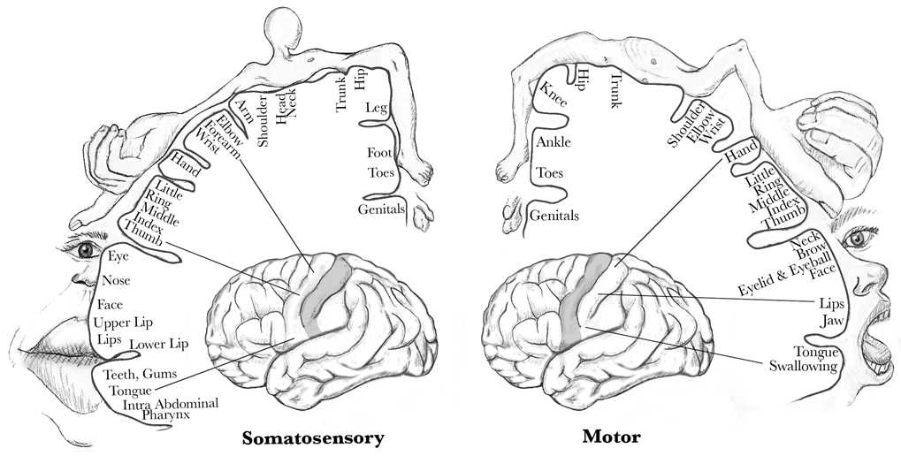
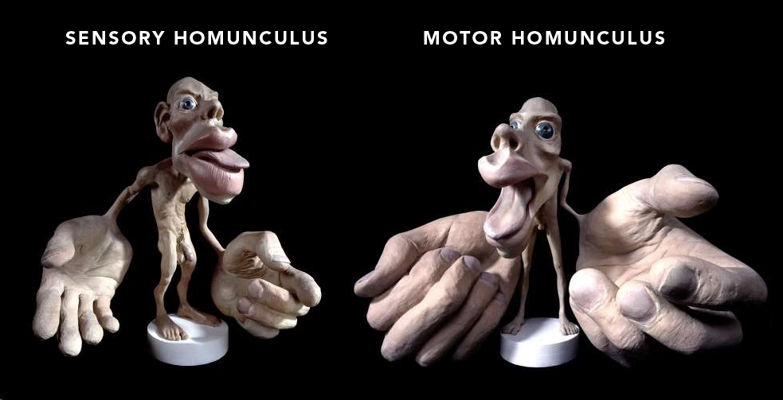

INTRODUCTION
H-bloc Demonstration
H-bloc Technologies Stack
AIxAI
AIxAI (Artificial Intelligence x Architectural Intelligence) is a project designed to develop a workflow that employs machine learning to enable a computer to monitor physical 3D-printed blocks. This system facilitates multiple methods of hands-on involvement in the design process. Architects can intuitively manipulate the blocks, and the system will convert those physical attributes into digital models. This approach preserves the natural creativity of manual design while utilizing computational power.
Computer-assisted design technologies are now so dominant that they greatly reduce the need for designers' hands-on involvement in the design process. Architects use a variety of advanced digital approaches (BIM, parametrical modeling, Procedural modeling, generative AI) to solve design problems. But does this evolution enhance architectural intelligence? Do we still need hands-on involvement to improve architectural intelligence?
The "sensory homunculus" or "motor homunculus" is a visual representation of the human body that illustrates how the brain perceives different parts of the body in terms of sensory input or motor control. In the sensory homunculus, body parts are depicted in proportion to how much sensory cortex is dedicated to them. For example, the hands and lips are shown much larger because they have more sensory nerve endings and thus more brain power dedicated to them. The same applies to the motor homunculus, which represents the brain's control over body movements.
Sensory homunculus model by Sharon Price-James. The cortical homunculus represents the area of the brain's cortex dedicated to sensory functions.
The rise of computers, smartphones, and touch screens has significantly decreased the practice of real-world, hands-on skills. Nowadays, we do almost everything virtually, using computer screens. We primarily use our hands to tap keys and swipe screens, which has somewhat reduced the stimulation received by the sensory motor cortex. If we are not fully utilizing our hands, perhaps we are also not fully utilizing our brains. What might be the long-term effects of this on us and our society? As the old saying goes, "Use it or lose it." Only time will tell.
Homunculus' Bloc
The Homunculus Block is a 3D-printable object that can interact with human hands and be interlockable with other blocks. It is also designed to allow a computer to efficiently track their unique IDs, positions, and orientations. These attributes are synchronized with the digital environment, so the computer is aware of hand interactions in real-time.
Computer Vision
Synthetic data that generated by computers is cost-effective for machine learning and computer vision processes. The trained model enables the computer to recognize the target object in the physical world.
An illustration of the machine learning process.
The video below demonstrates the results achieved by this technology. The digital modeling environment captures attributes from the blocks and then generates input for the diffusion model to create images from it.
An Illustration of the training results.
Voxel System
I found that if I can add a sementic color-coded system to the traditional Wave Function Collapse (WFC) method, it allows me to interactively control the results of WFC, potentially turning it into an interactive design tool. The key is to create a 3D voxel meta-structure that stores semantic attributes using color, value, and tensor information of the voxel. The algorithm then link the meta-tile to detailed tiles in real-time.
Color Voxel System

Color Voxel System in 3D View
In 3D Wave Function Collapse (WFC), a voxel has 26 possible neighboring positions, leading to 2^26 potential neighbor configurations, which is an extremely large number. To manage this complexity, consider the moon's phases as an analogy: just as the elliptical phase is the most common moon phase, most voxel neighbors have common patterns. Similar to the regularity of a full moon occurring every month, some voxel neighbor configurations are less frequent but still predictable. Additionally, there are rare events like the supermoon, blue moon, and harvest moon, which represent the least common voxel neighbor configurations.
The 26 neighbors of a voxel

Possibilities of neighbor-conditions

The 26 neighbors of a voxel
The video below shows the voxel sculpting tool (WIP), allowing designers to intuitively control the voxel appearance with multiple sets of semantic WFC modules.
Renderings

This is a placeholder rendering
AIxAI Grasshopper Plugin
Use Grasshopper as the user interface to employ the technologies mentioned above. This involves using a 3D voxel sculpting tool within the Rhino environment, which intuitively changes the attributes in the voxel system.

About Me
Tianxiao Peng is a California licensed architect with 15 years of professional experience, specializing in innovative design using open source tools. He has extensive experience with Grasshopper scripting (12 years) and Python programming (10 years) and is currently developing a Grasshopper plugin in C#. Tianxiao holds a Master of Science from SCI-Arc and a Master of Architecture degree from Ball State University. He is committed to leveraging technology's profound impact on architecture and society.